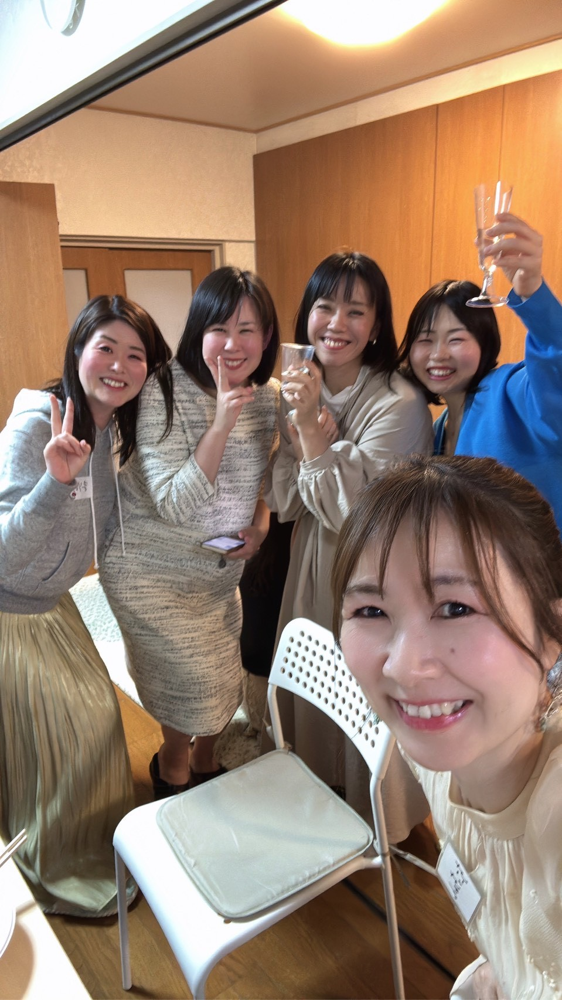

4月29日（水・祝）16:00〜21:00
🌸優【You】BASE 原宿サロン
鮨まさや大将＆弟子による握り鮨。
※お鮨の提供は18:00頃〜スタート！
握りたてを食べたい方はこの時間に。
優喜子お手製の料理をたくさんご用意します。
日本酒・ワイン・リキュールなど。今年は特別な希少酒もご用意！

相手と一瞬で距離を縮める、最高のコミュニケーションツールとしての鮨
本業はプロデューサーでありながら、趣味で始めた「鮨」の振る舞いが大きな反響を呼び、紹介制の「鮨まさや」へと発展。
ただ美味しいだけでなく、「会話が生まれ、ご縁が繋がる場」としての体験設計を得意とする。今回は夏の大舞台を見据え、感謝の気持ちを込めて渾身の鮨を握ります。
来れそうな方はぜひ日程を空けておいてくださいね！
参加を申し込む